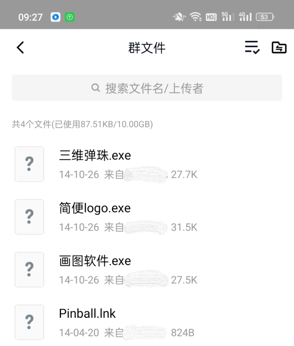

远古的啊哈C
在我小学六年级的时候，老哥给我买了本小学生坐在马桶上都能读懂的Ｃ语言书《啊哈Ｃ语言》。那时候老哥应该大学在读，大概是本着培养兴趣把这本书塞给我。当初对游戏着迷。家人们抱着“你那么爱玩游戏，做一个游戏给别人玩”的想法鼓励我敲敲代码。虽然在小学生看来，对着电脑写代码就像黑客一样酷炫。看着满屏滚动的代码和窗口，自己动动手指，就能在世界的某个地方引起骚乱和轰动。亦或者是黑入某个企业或政府的网站，把主页改成“ＸＸＸ到此一游”。然后坐等媒体宣传，国家招安。但很快在过早的年龄，体验到头秃的感觉。

谁能想象，一个正值童年的小子，看着书对着电脑一个字母一个字母的敲。边敲边抓脑袋，痛苦着思考示例程序的代码逻辑，头发大把大把掉。真是童年的梦魇。
怎么可能？！
事实上，当自己用‘＃’和‘＠’等一些特殊字符，仿照书上手打了一两幅走迷宫的地图，便放弃了。又麻烦又不好玩。早早明白了做游戏是多累多无聊的事情。而且看了那么久书，也没教人什么好玩的东西。索性丢书逛论坛去了。论坛有不少人的示例程序，自己copy别人的代码，在电脑上跑着玩。现在才明白，这才是程序猿的正确打开方式。Ctrl+C和Ctrl+V使我在放弃后，仍能兴致勃勃的翻阅代码。
印象较深的是Ai对话和一款文字游戏《勇者斗恶龙》。Ai对话也不算Ai，更像是本字典。你填入提问的答案，它才会回答。不然就是不知道，不清楚。虽然交互上比现在的ChatGpt更方便调教，但是也极度无聊。或许大家交换自己的Ai，才会有点玩头。《勇者斗恶龙》应该是我第一款接触到的文字游戏。因为几个选项暴毙魔界后，便想着修改源码。抓耳挠腮的反复翻看几千行的代码，瞎改。不过有点小聪明，知道哪些地方不能动，哪些地方改了也白改。但还是无果。随后这份源码便保存在我的ＱＱ日志里，仅我可见。

其他的代码，就是贪吃蛇推箱子这种无聊小游戏。或者是让运行框显示烟花啊，在黑色背景下滚动的绿色数字，满足一下童年对黑客的幻想。但自己也知道这些只是嚎头而已。稍稍有点意思的，也只是一些像病毒一样的恶作剧。比如超多的弹窗，再怎么点叉也叉不完。弹出个窗口，给你１分钟让你承认你是猪，不承认，叉掉或者时间到了，电脑就会强制关机。或者模拟蓝屏，但是能用任务管理器清掉，或者按Ｅｓｃ就能使全屏变窗口。又或者是一个乱动的鼠标，只能靠自己的能力，用键盘调出任务管理器，再用鼠标点那个程序。至于怎么点，那只能看你了。实际上乱动的ＣＤ不长，也可以迅速摸过去点一下。当然，自己也能设置ＣＤ，但是再短，自己也关不掉了，只能重启。这些恶作剧小程序，给我改了个名，上传到班群去了。觉得最有搞头的鼠标乱动，命名为“三维弹珠”，其他的冠以电脑课学过的软件。希望能有人下载打开，然后看到异常的电脑大惊失色，慌忙的喊大人过来。不过到现在为止，除了我，也没什么人下过。自己也没听过关于隐藏在群文件之中“病毒”的小道消息。

后来，玩的差不多了，便丢在角落了。小孩子坐不住，谁会搁这电脑前坐一天，薅自己的头发写代码呢？哦，大一开始学Ｃ语言是这样的。大二开始学Ｃ５１和ｓｔｍ32标准库也是这样的。还好从小就深通ｃｏｐｙ的精髓，毕竟连牛顿也是站在巨人的肩膀上。